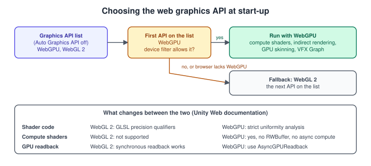
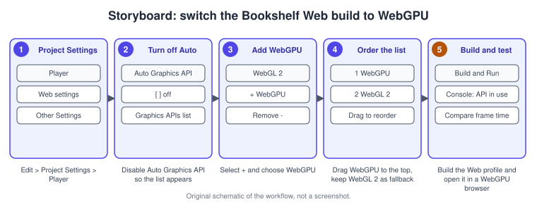
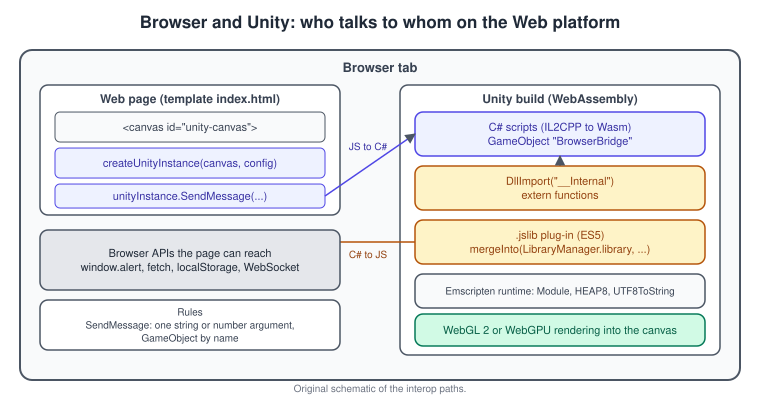

Web and WebGPU
|
This content was generated with the assistance of AI and should be verified against the official documentation before being relied on in production. |
Unity can compile a project to run inside a web page. The result is a folder of static files: a loader script, a framework script, a data file and a WebAssembly module, plus a page that starts them. Nothing is installed on the player’s machine, which makes the Web platform the easiest way to share the Bookshelf, and also the most constrained: the browser is a sandbox with no sockets, no threads for C#, limited memory and its own rules about audio and input.
The facts were checked in November 2026. The page documents Unity 6.3 LTS (6000.3); where behaviour changed in Unity 6.5 or 6.6 (the final Supported release of the Unity 6 family at the time of writing) the text says so. The requirements are Unity with the Web build support module, a browser that supports WebAssembly and WebGL 2 (desktop Chrome, Firefox, Edge and Safari; Safari 15 or later on iOS and Chrome 58 or later on Android on phones), and, for WebGPU, a browser and device that support it. In Unity 6 the platform is called Web; the older name WebGL survives in the graphics API, the UNITY_WEBGL scripting define and some file and menu names.
This page covers the Unity side. The browser APIs underneath are in WebGL and WebGPU Overview and Comparison, and the general browser background is in Canvas and WebGL in the Browser. Creating the build profile that targets Web is in Build Profiles and Platforms.
What a Web build contains
A build folder contains an index.html produced from the Web template and a Build folder with four main files, whose exact names carry the compression extension you selected: the loader (createUnityInstance is defined in it), the framework (the JavaScript runtime support generated by Emscripten, including your .jslib code), the data file (scenes and assets) and the code file (the WebAssembly module). Unity uses the Emscripten toolchain to cross-compile the runtime from C and C++ to WebAssembly, and IL2CPP to convert your C# into C++ first, so the Web platform always uses the IL2CPP back end. Starting with Unity 6.5 the bundled Emscripten is version 4.0.19, and on Apple silicon it runs natively, without Rosetta.
You can profile a running Web build by connecting the Profiler to the page by IP address (Unity 6.3), and the Web build settings and Player settings (Edit > Project Settings > Player > Web) hold the options described below.
Graphics: WebGL 2 and WebGPU
WebGL 2 is the default graphics API of the Web platform. It is based on OpenGL ES 3.0 and works in almost every browser and device. WebGPU is the newer browser API, built on the modern native APIs (Direct3D 12, Vulkan or Metal, depending on the device), and unlocks features WebGL 2 cannot provide:
-
Compute shaders.
-
Indirect rendering (
Graphics.RenderMeshIndirect). -
GPU skinning.
-
VFX Graph.
WebGPU was marked experimental in Unity 6.3. Unity 6.6 removes the experimental label ("WebGPU is now out of experimental release"), adds a WebGPU Device Filter asset that decides which browsers and devices may use WebGPU, and adds a compatibility mode with stricter limits for older devices (Unity falls back to it automatically). A project that must ship on Unity 6.3 LTS should treat WebGPU as an opt-in feature and keep WebGL 2 as the fallback.

Enable WebGPU for the Bookshelf
Unity does not enable WebGPU automatically, unlike WebGL 2. The steps are:
-
Open Edit > Project Settings > Player and select the Web tab.
-
Expand Other Settings.
-
Turn off Auto Graphics API. The Graphics API list appears.
-
Select Add (+) and choose WebGPU.
-
To keep WebGL 2 as a fallback, make sure it is in the list and drag WebGPU to the top. To use WebGPU only, select WebGL 2 and choose Remove (-).
Unity uses the first entry of the list; if the browser does not support that API, or something else fails, it tries the next one. Keeping both costs extra testing (and possibly code for two APIs) but lets browsers without WebGPU still run the Bookshelf.

Limits of WebGPU in Unity
The Unity documentation lists these limits; check them before relying on a feature.
-
No support for async compute, dynamic resolution and cubemap arrays.
-
Browser and device support is partial. Most major browsers support WebGPU, though you may need to enable it in the browser settings, and some texture formats and extensions are missing on Safari or Firefox. WebGPU needs a secure context, so the page must be served over HTTPS (or from
localhostwhile developing). -
Compute shaders: structured buffers (
RWStructuredBuffer) work butRWBufferdoes not; only a limited set of read-write storage texture formats exists (RGBA8andRHalfare not supported for read-write,RFloatis); barrier functions such asGroupMemoryBarrierWithGroupSyncmust be called in uniform control flow or the shader fails to compile; wave intrinsics,QuadShuffle,Int64andNative16Bitare not available. -
Synchronous GPU readback does not work.
Texture2D.GetPixelson a render texture,ComputeBuffer.GetData,ScreenCapture.CaptureScreenshotandScreenCapture.CaptureScreenshotAsTexturecannot be used; useAsyncGPUReadback, and for screen captures useScreenCapture.CaptureScreenshotIntoRenderTexturetogether with it. -
Other areas with limits: render texture channels, fonts, global illumination, video and shader variants.
SystemInfo.GetCompatibleFormat helps choose a texture format that works for a given usage. The following script logs the active API and reads a render texture back without blocking the main thread, which is the pattern WebGPU requires:
// Assets/Scripts/Bookshelf/WebGraphicsProbe.cs
using System;
using UnityEngine;
using UnityEngine.Rendering;
namespace Bookshelf
{
/// <summary>Reports the active graphics API and shows non-blocking GPU readback.</summary>
public sealed class WebGraphicsProbe : MonoBehaviour
{
[SerializeField] RenderTexture source;
void Start()
{
GraphicsDeviceType api = SystemInfo.graphicsDeviceType;
Debug.Log($"Graphics API: {api}, compute shaders: {SystemInfo.supportsComputeShaders}");
if (api == GraphicsDeviceType.WebGPU)
{
Debug.Log("Running on WebGPU: synchronous readback is not available.");
}
}
/// <summary>Starts an asynchronous readback; the callback runs a few frames later.</summary>
public void ReadCentrePixel()
{
if (source == null)
{
return;
}
AsyncGPUReadback.Request(source, 0, OnReadback);
}
static void OnReadback(AsyncGPUReadbackRequest request)
{
if (request.hasError)
{
Debug.LogWarning("GPU readback failed.");
return;
}
Debug.Log($"Readback finished: {request.width} x {request.height}, " +
$"{request.GetData<byte>().Length} bytes");
}
}
}The side-by-side comparison (support status, API basis, shader code, compute shaders, GPU readback, storage textures) is in the Unity page "Compare WebGPU and WebGL2". Rendering features of the render pipeline (see URP in Depth) behave the same on both APIs, but shaders written for one may need changes for the other: WebGL 2 requires explicit GLSL precision qualifiers, WebGPU applies strict uniformity analysis.
WebAssembly: 2023 target and 64-bit
WebAssembly 2023 is a set of newer WebAssembly features that Unity can target to speed up and shrink the build. Enabling it turns on all of: native WebAssembly exceptions (less overhead than the JavaScript-based mechanism), WebAssembly SIMD (including automatic vectorisation of simple scalar loops, useful for skinning and matrix maths), better memcpy and memset code, BigInt support for passing 64-bit integers between JavaScript and WebAssembly, WebAssembly.Table and cheaper data type conversions. It needs a recent browser: Chrome 91, Edge 91, Firefox 89 or Safari 16.4 or later.
In Unity 6.3 you enable it with Edit > Project Settings > Player > Web > Publishing Settings > Target WebAssembly 2023. In Unity 6.5 and later the option is on by default for new projects and is meant to become mandatory; leave it on. If you must disable it, the performance page recommends setting Stack Trace > Exception to None, because exception support costs more without the 2023 features.
WebAssembly64 (Unity 6.6) lets the heap grow beyond 4 GB, up to 16 GB, using the WebAssembly Memory64 extension. It enables WebAssembly 2023 automatically, can increase code size and run-time overhead, is not recommended for load-time-sensitive content and is not supported by Safari. Use it only if the application needs more than 4 GB.
Source: WebAssembly 2023, WebAssembly64
Talking to the page: JavaScript interop

There are two directions, and Unity gives each its own tool.
C# calls JavaScript through a JavaScript plug-in. A file with the .jslib extension registers functions with Emscripten’s mergeInto(LibraryManager.library, {...}), and C# declares them with [DllImport("__Internal")] as static extern methods. The .jslib is compiled with the Emscripten --js-library option; a .jspre file instead pastes an existing JavaScript library into the start of the framework file, and C# cannot call it directly (your .jslib code can use it). Both file types currently accept ECMAScript 5 syntax only: no let, const, arrow functions or classes.
JavaScript calls C# through SendMessage on the Unity instance. It can only call a method of a script on a GameObject, found by the GameObject’s name, and the method must take no parameter, one string or one number.
Values cross the boundary by simple rules:
-
Numbers (
int,float) pass as they are. -
Strings arrive as a pointer into the Emscripten heap: convert it with
UTF8ToString(ptr). To return a string, allocate with_malloc, write withstringToUTF8and return the pointer (IL2CPP frees the memory of a returned string). -
Arrays of primitives are pointers into the heap too; read them through the typed views
HEAP8,HEAPU8,HEAP16,HEAP32,HEAPU32,HEAPF32andHEAPF64(forHEAPF32the index is the pointer shifted right by two). -
Textures are reachable through Emscripten’s
GL.texturesarray and the WebGL contextGLctx.
The following plug-in lets the Bookshelf ask the page for its URL, save the best score in the browser’s local storage and tell the page when a book is picked:
// Assets/Plugins/WebGL/BookshelfBridge.jslib (ES5 only)
mergeInto(LibraryManager.library, {
// Called from C#: DllImport("__Internal") static extern void Bookshelf_SaveScore(int score);
Bookshelf_SaveScore: function (score) {
try {
window.localStorage.setItem('bookshelf.bestScore', String(score));
} catch (e) {
console.warn('Local storage is not available: ' + e);
}
},
// Returns the page address as a string allocated on the Emscripten heap.
Bookshelf_GetPageUrl: function () {
var text = window.location.href;
var size = lengthBytesUTF8(text) + 1;
var buffer = _malloc(size);
stringToUTF8(text, buffer, size);
return buffer;
},
// Receives a C string pointer and forwards it to a function the page defined.
Bookshelf_BookPicked: function (titlePtr) {
var title = UTF8ToString(titlePtr);
if (typeof window.onBookshelfBookPicked === 'function') {
window.onBookshelfBookPicked(title);
}
}
});// Assets/Scripts/Bookshelf/BrowserBridge.cs
using System.Runtime.InteropServices;
using UnityEngine;
namespace Bookshelf
{
/// <summary>
/// Attach to a GameObject named "BrowserBridge". JavaScript can call SetMuted and
/// SetDifficulty through unityInstance.SendMessage("BrowserBridge", ...).
/// </summary>
public sealed class BrowserBridge : MonoBehaviour
{
#if UNITY_WEBGL && !UNITY_EDITOR
[DllImport("__Internal")] static extern void Bookshelf_SaveScore(int score);
[DllImport("__Internal")] static extern string Bookshelf_GetPageUrl();
[DllImport("__Internal")] static extern void Bookshelf_BookPicked(string title);
#else
// Editor and non-Web players: harmless stand-ins so the same code compiles everywhere.
static void Bookshelf_SaveScore(int score) { Debug.Log($"[stub] save score {score}"); }
static string Bookshelf_GetPageUrl() { return "editor://bookshelf"; }
static void Bookshelf_BookPicked(string title) { Debug.Log($"[stub] picked {title}"); }
#endif
void Start()
{
Debug.Log("Hosted at " + Bookshelf_GetPageUrl());
}
public void SaveScore(int score) => Bookshelf_SaveScore(score);
public void NotifyBookPicked(string title) => Bookshelf_BookPicked(title);
// Called by JavaScript: SendMessage takes a method with at most one string or number parameter.
public void SetMuted(string value)
{
AudioListener.pause = value == "1";
}
public void SetDifficulty(float value)
{
Debug.Log($"Difficulty set from the page: {value}");
}
}
}Source: Set up your JavaScript plug-in, Call JavaScript functions from Unity C# scripts, Call Unity C# script functions from JavaScript
Three details deserve care. First, DllImport("__Internal") works only in a Web player: wrap the declarations in #if UNITY_WEBGL && !UNITY_EDITOR as above, or the Editor throws EntryPointNotFoundException. Second, SendMessage finds objects by name, so a renamed or inactive GameObject silently stops receiving calls. Third, a few older helpers have replacements: dynCall becomes makeDynCall, Pointer_stringify becomes UTF8ToString, unity.Instance becomes createUnityInstance and gameInstance becomes unityInstance.
The page: a custom Web template
A Web template is a folder under Assets/WebGLTemplates with an index.html. Unity replaces {{{ NAME }}} macros with build values, for example the loader and file names, the product name and the canvas size, and turns macros it does not know into fields of Player Settings > Resolution and Presentation > Web Template (the field for PAGE_TITLE appears after you select the template again). The page must contain a <canvas>, load the loader script and call createUnityInstance(canvas, config, onProgress), which returns a Promise that yields the instance used for interaction.
<!-- Assets/WebGLTemplates/Bookshelf/index.html -->
<!DOCTYPE html>
<html lang="en">
<head>
<meta charset="utf-8">
<meta name="viewport" content="width=device-width, initial-scale=1.0, user-scalable=no">
<title>{{{ PAGE_TITLE }}}</title>
</head>
<body style="margin:0;background:{{{ BACKGROUND_COLOR }}}">
<canvas id="unity-canvas" style="width:100%;height:100vh;display:block"></canvas>
<progress id="loading" value="0" max="1"></progress>
<button id="mute">Mute</button>
<script>
var instance = null;
window.onBookshelfBookPicked = function (title) {
console.log('Picked in Unity: ' + title);
};
var script = document.createElement('script');
script.src = 'Build/{{{ LOADER_FILENAME }}}';
script.onload = function () {
createUnityInstance(document.querySelector('#unity-canvas'), {
dataUrl: 'Build/{{{ DATA_FILENAME }}}',
frameworkUrl: 'Build/{{{ FRAMEWORK_FILENAME }}}',
codeUrl: 'Build/{{{ CODE_FILENAME }}}',
streamingAssetsUrl: 'StreamingAssets',
companyName: '{{{ COMPANY_NAME }}}',
productName: '{{{ PRODUCT_NAME }}}',
productVersion: '{{{ PRODUCT_VERSION }}}'
}, function (progress) {
document.querySelector('#loading').value = progress;
}).then(function (unityInstance) {
instance = unityInstance;
document.querySelector('#loading').style.display = 'none';
}).catch(function (message) {
alert(message);
});
};
document.body.appendChild(script);
document.querySelector('#mute').addEventListener('click', function () {
if (instance) { instance.SendMessage('BrowserBridge', 'SetMuted', '1'); }
});
</script>
</body>
</html>If one page embeds several builds, call each build’s createUnityInstance from the onload of that build’s own loader script, because the function is specific to its build. The set of fields inside config is documented on the "Web template build configuration and interaction" page; copy it from a default template if you need other keys (for example a custom cache setting).
Compression, hosting and caching
Compression Format (Player Settings > Web > Publishing Settings) applies to release builds only; development builds are not compressed.
| Method | Notes |
|---|---|
gzip |
The default. Bigger than Brotli, faster to build, supported by every browser over HTTP and HTTPS. |
Brotli |
Best compression ratio, slower to compress (longer release iteration), and Chrome and Firefox decode it natively only over HTTPS. |
Disabled |
No compression: use it if you compress in post-processing or with static compression on the server. |
The build writes files such as Bookshelf.wasm.br or Bookshelf.data.gz. For the browser to unpack them while downloading, the server must add a Content-Encoding header that matches, and the correct Content-Type (for example application/wasm, which also enables streaming compilation). The alternative is Decompression Fallback: Unity embeds a JavaScript decompressor in the build and names the files with a .unityweb extension. It is the easy option when you cannot configure the server, at the cost of a bigger loader and a less efficient loading scheme; it is off by default.
# Nginx: serve the Brotli-precompressed Bookshelf files (inside the existing location block)
location ~ .+\.(data|symbols\.json)\.br$ {
gzip off;
add_header Content-Encoding br;
default_type application/octet-stream;
}
location ~ .+\.js\.br$ {
gzip off;
add_header Content-Encoding br;
default_type application/javascript;
}
location ~ .+\.wasm\.br$ {
gzip off;
add_header Content-Encoding br;
default_type application/wasm;
}Hosting is plain static hosting: any web server, CDN or object store works as long as the headers are right. If the host does not let you set Content-Encoding on the compressed files, turn Decompression Fallback on. Test the real host, not only Build and Run.
Texture compression for the Web platform follows the device: DXT on desktop browsers and ASTC on mobile browsers, which can mean two builds. An unsupported format is decompressed in software, which uses more memory and may run slower. Set the default in the Web build settings (which take priority) or in the Player Settings, and override individual textures in their import settings.
Memory, networking, audio and input
Memory. The Unity heap is one contiguous block that grows while the game runs, up to 4 GB with the default 32-bit WebAssembly, depending on the Maximum Memory Size in the Player Settings and on the browser, device and operating system. Growing can fail when the browser cannot find a contiguous block, and that crashes the page, so keep the heap small and plan memory early. Unity warns that the heap, asset data and garbage collection are the three big consumers; use the Profiler on a real browser.
Networking. Browsers forbid sockets. The .NET classes in System.Net.Sockets, System.Net.Http and System.Net.WebSockets are not supported, nor is UnityEngine.Ping. Use UnityWebRequest, which is built on the JavaScript Fetch API and therefore follows the same-origin rule: a request to another server needs that server to send CORS headers (Access-Control-Allow-Origin and friends). Never block on a request with while (!www.isDone) {}; the browser cannot wait synchronously, so use a coroutine or await instead. For real-time multiplayer, Netcode for GameObjects supports the Web platform (see Multiplayer and Netcode), and the browser’s WebSocket, WebRTC and WebTransport standards underlie that.
Threads. C# threading is not supported: Thread, Monitor, Mutex, Semaphore and similar types compile but have no effect, and asynchronous file I/O can hang the browser. Unity provides multithreading for C and C++ code and, in Unity 6.6, for Burst-compiled jobs. Move heavy work to jobs or spread it over frames instead. System.IO works over an in-memory virtual file system, so files written there disappear when the page closes; use PlayerPrefs, IndexedDB-backed storage or your own server for persistent data (see Saving, Loading and HTTP Networking).
Audio. Unity’s normal audio engine relies on threads, so on the Web it uses the browser’s Web Audio API with a reduced feature set. Browsers also block autoplay until the user interacts with the page, so music that starts on load stays silent until a click or tap.
Input. Keyboard, mouse, touch, gamepads (through the HTML5 Gamepad API; the user has to press a button before a device appears) and mobile sensors work with either the Input Manager or the Input System. Cursor locking and full-screen mode have browser-specific restrictions described on the Input in Web page. A Web build also continues to run in a background tab only if Run In Background is on, and browsers throttle hidden tabs to about one update per second.
Common mistakes
-
Forgetting the headers. A page that stays on the loading bar or shows a decompression error in the browser console usually has a missing or wrong
Content-Encoding. Either fix the server or enable Decompression Fallback. -
Opening
index.htmlfrom the file system. Browsers block the fetches; serve the folder with a local web server or use Build and Run. -
Using
DllImport("__Internal")without the#ifguard, which breaks the Editor and every other platform. -
ES6 in a
.jslib. Arrow functions andletfail the build or the page; stay with ES5. -
Calling a
SendMessagemethod with two parameters or a complex type. Only none, one string or one number is allowed. -
Blocking on
UnityWebRequestor on a thread. It freezes the tab; use coroutines andAwaitable. -
Relying on synchronous GPU readback with WebGPU. Use
AsyncGPUReadback. -
Assuming everyone has WebGPU. Keep WebGL 2 in the list and test a browser without WebGPU.
-
Large initial downloads. One data file with everything makes a long first load; split content into Addressables loaded on demand (see Assets, Addressables and Content).
Performance notes
-
On the GPU, Web performance is close to native when rendering with WebGL because the browser uses the device’s hardware acceleration; the extra cost is the translation of WebGL calls and shaders to the operating system’s API.
-
On the CPU, code runs as WebAssembly, whose speed depends on the browser. Keep Target WebAssembly 2023 on to get SIMD and native exceptions.
-
CPU-side WebGL call dispatch is slower than native OpenGL, so keep draw calls low and use instancing, batching and the SRP Batcher (see URP in Depth). Dynamic batching is deprecated from Unity 6.5.
-
Leave
Application.targetFrameRateat -1 so the browser can pace the frame with its own render loop; Unity cannot query a browser’s real refresh rate and assumes 60 Hz. -
Stripping, texture compression, audio compression and Addressables all reduce the download; measure the transfer size in the browser’s network panel.
-
Profile with the Unity Profiler connected over IP, and with the browser’s tools (see Profiling and Optimization).
What changed recently
| Version | Change |
|---|---|
Unity 6.0 |
The WebGL platform is renamed Web; build profiles replace the Build Settings window. |
Unity 6.3 LTS |
WebGPU is available as an experimental graphics API. The Unity Profiler can connect to a running Web build over an IP connection. The Emscripten toolchain runs natively on Apple silicon. |
Unity 6.5 |
Target WebAssembly 2023 is enabled by default; the Emscripten compiler is version 4.0.19; IL2CPP metadata is optimised to reduce Web build size. |
Unity 6.6 |
WebGPU leaves the experimental stage, with a Device Filter asset and an automatic compatibility mode; WebAssembly64 allows heaps up to 16 GB; multithreading with Burst-compiled jobs is documented for the Web platform. |
Where the books are outdated
UIA is Unity in Action (3rd edition); GDP is Game Development Patterns with Unity 2021 (2nd edition).
-
UIA chapter 13 calls the platform "WebGL" and walks through File > Build Settings. Unity 6 names it Web and uses Build Profiles; WebGPU is production-ready in 6.6 and WebAssembly 2023 is the default from 6.5.
-
UIA chapter 12 stores saves with
BinaryFormatter, which is insecure and was removed in .NET 9; use JSON, and remember that on the Web files live in a memory file system. -
GDP chapter 4 and UIA chapter 9 assume statics persist reliably between Play mode sessions. Unity 6.6 reloads only the scene by default for new projects, so reset statics with
RuntimeInitializeOnLoadMethod.
See also
-
Build Profiles and Platforms: creating and building the Web profile.
-
Profiling and Optimization: profiling a Web build.
-
Assets, Addressables and Content: splitting a large download.
-
Saving, Loading and HTTP Networking:
UnityWebRequestand persistent data. -
Multiplayer and Netcode: networking that works in a browser.
-
WebGL: the browser API below WebGL 2.
-
WebGPU Overview and Comparison: the browser API below WebGPU.
-
OffscreenCanvas and Workers: browser threading.
-
Canvas and WebGL in the Browser: the JavaScript side of canvas rendering.
-
Performance and Profiling: general performance concepts.